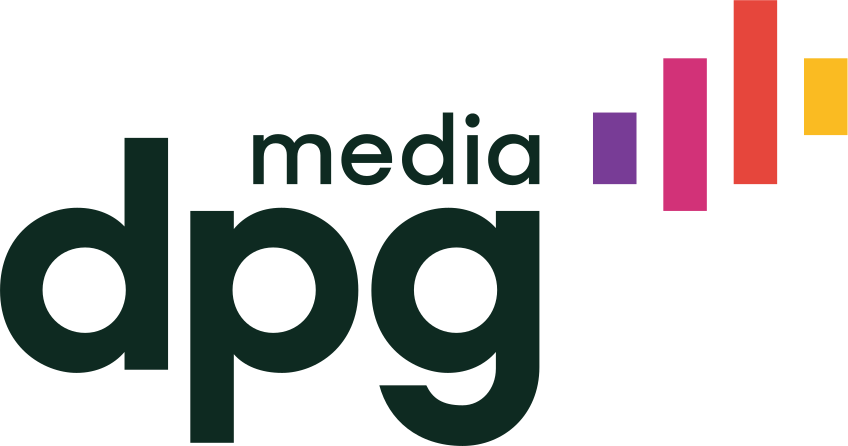

Twee werkweken tijdswinst
- 204 medewerkers
- 27 afdelingen
Chemie- en technologiebedrijf

Gedaan met splitsen en consolideren van excels. Bye-bye versies en errors.
Datagedreven volgens je loonbeleid, loonbanden, prestatiescores en andere parameters. Wat jij verkiest.
| Medewerker | Score | Voorstel |
|---|---|---|
| Laura Jacobs | Strong | + 3,4% |
| Rachid El Amrani | On track | + 2,1% |
| Anne Peeters | Strong | + 3,7% |
| Jonas De Smet | On track | + 2,0% |
Minder overschrijdingen. Meer controle, per budget en in totaal. Geen budget slippage meer.
Beschikbaar budget
€ 184.250
Twee werkweken tijdswinst
Chemie- en technologiebedrijf
Meerdere werkdagen bespaard
Softwaregroep
Live op 3 maanden
Infrastructuur- en logistiekgroep
Van 2 maanden naar 3 weken
Hr-dienstverlener
7× sneller
Mediagroep
TODO — nodig van klant: de vijf case-pdf’s bestaan nog niet, dus de downloadlinks wijzen voorlopig naar dit blokje in plaats van naar een bestand dat er niet is
Zie wie klaar is en waar nog actie nodig is. Managers zien enkel hun team en hun data.
Volg het voorstel of wijk gemotiveerd af. Bekijk uitschieters, onderzoek individuele situaties of vergelijk medewerkers.
Zie meteen de impact van elke beslissing. Beheer het loonsverhoging-, bonus- en promotiebudget apart, en geef directie en finance een overzicht over het hele bedrijf.
Gepersonaliseerd en klaar om te versturen wanneer je wil. Geen mailmerge meer.
TODO — te bevestigen: de vier schermen zijn nagetekend met eigen, sluitende voorbeeldcijfers uit één demodataset, omdat het bestaande hero-scherm van youbo.io dezelfde medewerker op twee verschillende bedragen zet. Zodra er toegang is tot de app vervangen we ze door echte schermen met geanonimiseerde data
Start nu: ontdek loonverschillen en werk ze tijdig weg. Bewijs dat elke loonbeslissing consequent is.
Youbo past in elk hr-landschap en haalt zijn gegevens uit de systemen die je al gebruikt.
“Dankzij Youbo hebben we onze budget slippage volledig weggewerkt in amper 2 cycli.”
“Toen ik een demo zag, wist ik: hier hebben we op gewacht.”

“Youbo helpt om de loonkloof weg te werken.”
“Dankzij Youbo is de interne billijkheid toegenomen. Door de transparantie voer ik nu betere inhoudelijke gesprekken met mijn team.”
“Als Youbo morgen zou verdwijnen, zouden we vooral het overzicht missen. In één klik zien we de jaarkost en het totale loonpakket van de werknemer.”
Van het eerste contact tot de eerste looncyclus duurt het gemiddeld drie maanden. De precieze doorlooptijd hangt af van je organisatie, je beschikbare loondata en je loonbeleid. Een developer begeleidt de inrichting, daarna werk je zelfstandig verder.
Youbo wordt gebruikt door bedrijven vanaf 50 medewerkers. Het grootste rendement ontstaat doorgaans vanaf 300 medewerkers, of zodra het Excelproces complex en persoonsafhankelijk wordt.
Dit is de vraag die iedereen stelt, en ze hoort op de pagina. Wat hier komt te staan, beslist Youbo zelf.
TODO — te bevestigen: het antwoord op de prijsvraag. Jana loopt dit na met de partners en met Nicole. Een bereik of de logica achter de prijs is verdedigbaar, geen antwoord is dat niet
Ja. Je loonbeleid, organisatiestructuur, goedkeuringsflows en marges vormen het uitgangspunt. Youbo neemt ook complexe regels en formules over.
Ja. Je kunt budgetten fijnmazig verdelen over meerdere hiërarchische niveaus en Youbo inzetten in verschillende landen.
Youbo past regels consequent toe, bewaakt afwijkingen en maakt elke loonbeslissing onderbouwd en traceerbaar.
Nick Van Langendonck, reward expert, laat je zien hoe Youbo aansluit op jullie loonbeleid, structuur en systemen. Hij neemt persoonlijk contact op.
Of boek rechtstreeks in Nicks agenda
Of mail hem op nick.vanlangendonck@youbo.io
Of bel hem op 0486 08 27 65
TODO — nodig van klant: de link naar Nicks agenda is aangevraagd en bestaat nog niet. Zolang die er niet is staat hier geen knop, want een knop die nergens naartoe gaat is in een review niet van een werkende te onderscheiden
We plaatsen meetcookies om te zien hoe deze pagina gebruikt wordt.
Nick toont je Youbo op jouw eigen looncyclus